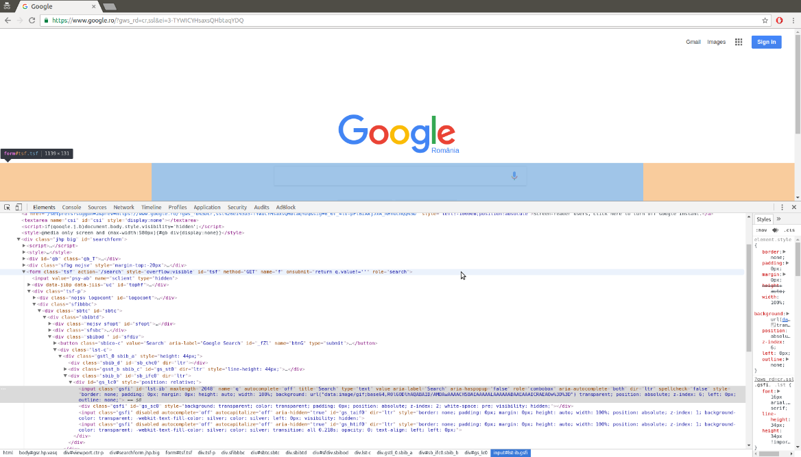
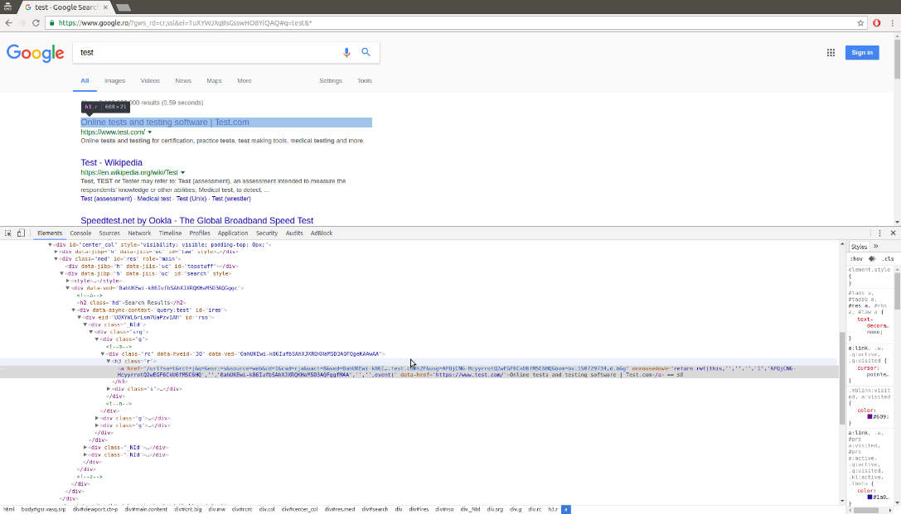
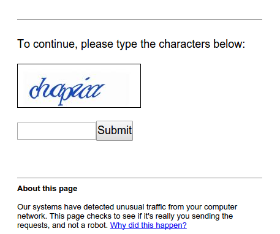
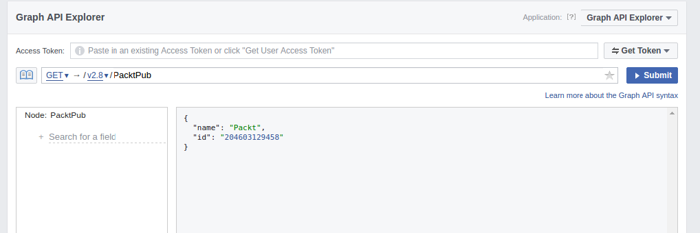
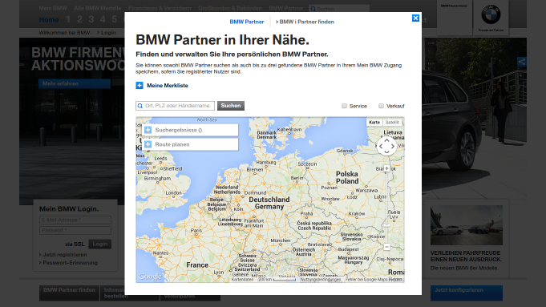
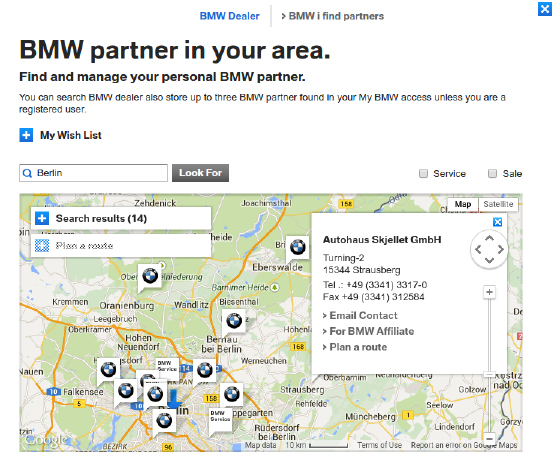

Google国际化版本可能会根据你的地理位置跳转到指定国家（或地区）的版本。在下述示例中，Google将被设置为罗马尼亚的版本，因此你的结果可能会看起来有些区别。
目前为止，本书介绍的爬虫技术都是应用于一个定制网站，这样可以帮助我们更加专注于学习特定技巧。而在本章中，我们将分析几个真实网站，来看看我们在本书中学过的这些技巧是如何应用的。首先我们使用Google演示一个真实的搜索表单，然后是依赖JavaScript和API的网站Facebook，接下来是典型的在线商店Gap，最后是拥有地图接口的宝马官网。由于这些都是活跃的网站，因此读者在阅读本书时这些网站存在已经发生变更的风险。不过这样也好，因为本章示例的目的是为了向你展示如何应用前面所学的技术，而不是展示如何抓取任何网站。当你选择运行某个示例时，首先需要检查网站结构在示例编写后是否发生过改变，以及当前该网站的条款与条件是否禁止了爬虫。
在本章中，我们将介绍如下主题：
为了了解我们对CSS选择器知识的使用情况，我们将会抓取Google的搜索结果。根据第4章中Alexa的数据，Google是全世界最流行的网站之一，而且非常方便的是，该网站结构简单，易于抓取。
Google国际化版本可能会根据你的地理位置跳转到指定国家（或地区）的版本。在下述示例中，Google将被设置为罗马尼亚的版本，因此你的结果可能会看起来有些区别。
图9.1所示为Google搜索主页使用浏览器工具加载查看表单元素时的界面。

图9.1
可以看到，搜索查询存储在输入参数q当中，然后表单提交到action属性设定的/search路径。我们可以通过将test作为搜索条件提交给表单对其进行测试，此时会跳转到类似https://www.google.ro/?gws_ rd=cr,ssl&ei=TuXYWJXqBsGsswHO8YiQAQ#q=test&*的 URL中。确切的URL取决于你的浏览器和地理位置。此外，如果开启了Google实时，那么搜索结果会使用AJAX执行动态加载，而不再需要提交表单。虽然URL中包含了很多参数，但是只有用于查询的参数q是必需的。
当URL为https://www.google.com/search?q=test时，也能产生相同的搜索结果，如图9.2所示。
图9.2
搜索结果的结构可以使用浏览器工具来查看，如图9.3所示。

图9.3
从图9.3中可以看出，搜索结果是以链接的形式出现的，并且其父元素是class为"r"的<h3>标签。
想要抓取搜索结果，我们可以使用第2章中介绍的CSS选择器。
>>> from lxml.html import fromstring
>>> import requests
>>> html = requests.get('https://www.google.com/search?q=test')
>>> tree = fromstring(html.content)
>>> results = tree.cssselect('h3.r a')
>>> results
[<Element a at 0x7f3d9affeaf8>,
<Element a at 0x7f3d9affe890>,
<Element a at 0x7f3d9affe8e8>,
<Element a at 0x7f3d9affeaa0>,
<Element a at 0x7f3d9b1a9e68>,
<Element a at 0x7f3d9b1a9c58>,
<Element a at 0x7f3d9b1a9ec0>,
<Element a at 0x7f3d9b1a9f18>,
<Element a at 0x7f3d9b1a9f70>,
<Element a at 0x7f3d9b1a9fc8>]到目前为止，我们已经下载得到了Google的搜索结果，并且使用lxml抽取出其中的链接。在图9.3中，我们发现链接中的真实网站URL之后还包含了一串附加参数，这些参数将用于跟踪点击。
下面是我们在页面中找到的第一个链接。
>>> link = results[0].get('href')
>>> link
'/url?q=http://www.speedtest.net/&sa=U&ved=0ahUKEwiCqMHNuvbSAhXD6gTMAA&usg=
AFQjCNGXsvN-v4izEgZFzfkIvg'这里我们需要的内容是http://www.speedtest.net/，可以使用urlparse模块从查询字符串中将其解析出来。
>>> from urllib.parse import parse_qs, urlparse
>>> qs = urlparse(link).query
>>> parsed_qs = parse_qs(qs)
>>> parsed_qs
{'q': ['http://www.speedtest.net/'],
'sa': ['U'],
'ved': ['0ahUKEwiCqMHNuvbSAhXD6gTMAA'],
'usg': ['AFQjCNGXsvN-v4izEgZFzfkIvg']}
>>> parsed_qs.get('q', [])
['http://www.speedtest.net/']该查询字符串解析方法可以用于抽取所有链接。
>>> links = []
>>> for result in results:
... link = result.get('href')
... qs = urlparse(link).query
... links.extend(parse_qs(qs).get('q', []))
...
>>> links
['http://www.speedtest.net/',
'test',
'https://www.test.com/',
'https://ro.wikipedia.org/wiki/Test',
'https://en.wikipedia.org/wiki/Test',
'https://www.sri.ro/verificati-va-aptitudinile-1',
'https://www.sie.ro/AgentiaDeSpionaj/test-inteligenta.html',
'http://www.hindustantimes.com/cricket/india-vs-australia-live-cricket-scor
e-4th-test-dharamsala-day-3/story-8K124GMEBoiKOgiAaaB5bN.html',
'https://sports.ndtv.com/india-vs-australia-2017/live-cricket-score-india-v
s-australia-4th-test-day-3-dharamsala-1673771',
'http://pearsonpte.com/test-format/']成功了！从Google搜索中得到的链接已经被成功抓取出来了。该示例的完整源码位于本书源码文件的chp9文件夹中，其名为scrape_google.py。
抓取Google搜索结果时会碰到的一个难点是，如果你的IP出现可疑行为，比如下载速度过快，则会出现验证码图像，如图9.4所示。
我们可以使用第7章中介绍的技术来解决验证码图像这一问题，不过更好的方法是降低下载速度，或者在必须高速下载时使用代理，以避免被Google怀疑。过分请求Google会造成你的IP甚至是一个IP段被封禁，几个小时甚至几天无法访问Google的域名，所以请确保你能够礼貌地使用该网站，不会使你的家庭或办公室中的其他人（包括你自己）被列入黑名单。

图9.4
为了演示浏览器和API的使用，我们将会研究Facebook的网站。目前，从月活用户数维度来看，Facebook是世界上最大的社交网络之一，因此其用户数据非常有价值。
图9.5所示为Packt出版社的Facebook页面。
当你查看该页的源代码时，可以找到最开始的几篇日志，但是后面的日志只有在浏览器滚动时才会通过AJAX加载。另外，Facebook还提供了一个移动端界面，正如第1章所述，这种形式的界面通常更容易抓取。该页面在移动端的展示形式如图9.6所示。
图9.5
图9.6
当我们与移动端网站进行交互，并使用浏览器工具查看时，会发现该界面使用了和之前相似的结构来处理AJAX事件，因此该方法无法简化抓取。虽然这些AJAX事件可以被逆向工程，但是不同类型的Facebook页面使用了不同的AJAX调用，而且依据我的过往经验，Facebook经常会变更这些调用的结构，所以抓取这些页面需要持续维护。因此，如第5章所述，除非性能十分重要，否则最好使用浏览器渲染引擎执行JavaScript事件，然后访问生成的HTML页面。
下面的代码片段使用Selenium自动化登录Facebook，并跳转到给定页面的URL。
from selenium import webdriver
def get_driver():
try:
return webdriver.PhantomJS()
except:
return webdriver.Firefox()
def facebook(username, password, url):
driver = get_driver()
driver.get('https://facebook.com')
driver.find_element_by_id('email').send_keys(username)
driver.find_element_by_id('pass').send_keys(password)
driver.find_element_by_id('loginbutton').submit()
driver.implicitly_wait(30)
# wait until the search box is available,
# which means it has successfully logged in
search = driver.find_element_by_name('q')
# now logged in so can go to the page of interest
driver.get(url)
# add code to scrape data of interest here ...然后，可以调用该函数加载你感兴趣的Facebook页面，并使用合法的Facebook邮箱和密码，抓取生成的HTML页面。
如第1章所述，抓取网站是在其数据没有给出结构化格式时的最末之选。而Facebook确实为绝大多数公共或私有（通过你的用户账号）数据提供了API，因此我们需要在构建加强的浏览器抓取之前，首先检查一下这些API提供的访问是否已经能够满足需求。
首先要做的事情是确定通过API哪些数据是可用的。为了解决该问题，我们需要先查阅其API文档。开发者文档的网址为https://developers.facebook.com/docs，在这里给出了所有不同类型的API，包括图谱 API，该API中包含了我们想要的信息。如果你需要构建与Facebook的其他交互（通过API或SDK），可以随时查阅该文档，该文档会定期更新并且易于使用。
此外，根据文档链接，我们还可以使用浏览器内的图谱 API探索工具，其地址为https://developers.facebook.com/tools/explorer/。如图9.7所示，探索工具是用来测试查询及其结果的很好的地方。

图9.7
在这里，我可以搜索API，获取PacktPub的Facebook页面ID。图谱探索工具还可以用来生成访问口令，我们可以用它来定位API。
想要在Python中使用图谱API，我们需要使用具有更高级请求的特殊访问口令。幸运的是，有一个名为facebook-sdk（https://facebook-sdk.readthedocs.io）的维护良好的库可以供我们使用。我们只需通过pip安装它即可。
pip install facebook-sdk下面是使用Facebook的图谱API从Packt出版社页面中抽取数据的代码示例。
In [1]: from facebook import GraphAPI
In [2]: access_token = '....' # insert your actual token here
In [3]: graph = GraphAPI(access_token=access_token, version='2.7')
In [4]: graph.get_object('PacktPub')
Out[4]: {'id': '204603129458', 'name': 'Packt'}我们可以看到和基于浏览器的图谱探索工具相同的结果。我们可以通过传递想要抽取的额外信息，来获得页面中的更多信息。要确定使用哪些信息，我们可以在图谱文档中看到页面中所有可用的字段，文档地址为https://developers.facebook.com/docs/graph-api/reference/page/。使用关键字参数fields，我们可以从API中抽取这些额外可用的字段。
In [5]: graph.get_object('PacktPub', fields='about,events,feed,picture')
Out[5]:
{'about': 'Packt provides software learning resources, from eBooks to video
courses, to everyone from web developers to data scientists.',
'feed': {'data': [{'created_time': '2017-03-27T10:30:00+0000',
'id': '204603129458_10155195603119459',
'message': "We've teamed up with CBR Online to give you a chance to win 5
tech eBooks - enter by March 31! http://bit.ly/2mTvmeA"},
...
'id': '204603129458',
'picture': {'data': {'is_silhouette': False,
'url':
'https://scontent.xx.fbcdn.net/v/t1.0-1/p50x50/14681705_10154660327349459_7
2357248532027065_n.png?oh=d0a26e6c8a00cf7e6ce957ed2065e430&oe=59660265'}}}我们可以看到该响应是格式良好的Python字典，我们可以很容易地进行解析。
图谱API还提供了很多访问用户数据的其他调用，其文档可以从Facebook的开发者页面中获取，网址为https://developers.facebook.com/docs/graph-api。根据所需数据的不同，你可能还需要创建一个Facebook开发者应用，从而获得可用时间更长的访问口令。
为了演示使用网站地图查看内容，我们将使用Gap的网站。
Gap拥有一个结构化良好的网站，通过Sitemap可以帮助网络爬虫定位其最新的内容。如果我们使用第1章中学到的技术调研该网站，则会发现在http://www.gap.com/robots.txt这一网址下的robots.txt文件中包含了网站地图的链接。
Sitemap: http://www.gap.com/products/sitemap_index.xml下面是链接的Sitemap文件中的内容。
<?xml version="1.0" encoding="UTF-8"?>
<sitemapindex xmlns="http://www.sitemaps.org/schemas/sitemap/0.9">
<sitemap>
<loc>http://www.gap.com/products/sitemap_1.xml</loc>
<lastmod>2017-03-24</lastmod>
</sitemap>
<sitemap>
<loc>http://www.gap.com/products/sitemap_2.xml</loc>
<lastmod>2017-03-24</lastmod>
</sitemap>
</sitemapindex>如上所示，Sitemap链接中的内容不仅仅是索引，其中又包含了其他Sitemap文件的链接。这些其他的Sitemap文件中则包含了数千种产品类目的链接，比如http://www.gap.com/products/womens-jogger- pants.jsp，如图9.8所示。
图9.8
这里有大量需要爬取的内容，因此我们将使用第4章中开发的多线程爬虫。你可能还记得该爬虫支持URL模式以匹配页面。我们同样可以定义一个scraper_callback关键字参数变量，可以让我们解析更多链接。
下面是爬取Gap网站中Sitemap链接的示例回调函数。
from lxml import etree
from threaded_crawler import threaded_crawler
def scrape_callback(url, html):
if url.endswith('.xml'):
# Parse the sitemap XML file
tree = etree.fromstring(html)
links = [e[0].text for e in tree]
return links
else:
# Add scraping code here
pass该回调函数首先检查下载到的URL的扩展名。如果扩展名为.xml，则认为下载到的URL是Sitemap文件，然后使用lxml的etree模块解析XML文件并从中抽取链接。否则，认为这是一个类目URL，不过本例中还没有实现抓取类目的功能。现在，我们可以在多线程爬虫中使用该回调函数来爬取gap.com了。
In [1]: from chp9.gap_scraper_callback import scrape_callback
In [2]: from chp4.threaded_crawler import threaded_crawler
In [3]: sitemap = 'http://www.gap.com/products/sitemap_index.xml'
In [4]: threaded_crawler(sitemap, '[gap.com]*',
scraper_callback=scrape_callback)
10
[<Thread(Thread-517, started daemon 140145732585216)>]
Exception in thread Thread-517:
Traceback (most recent call last):
...
File "src/lxml/parser.pxi", line 1843, in lxml.etree._parseMemoryDocument
(src/lxml/lxml.etree.c:118282)
ValueError: Unicode strings with encoding declaration are not supported.
Please use bytes input or XML fragments without declaration.不幸的是，lxml期望加载来自字节或XML片段的内容，而我们存储的是Unicode的响应（因为这样可以让我们使用正则表达式进行解析，并且可以更容易地存储到磁盘中，如第3章和第4章所述）。不过，我们依然可以在本函数中访问该URL。虽然效率不高，但是我们可以再次加载页面；如果我们只对XML页面执行该操作，则可以减少请求的数量，从而不会增加太多加载时间。当然，如果我们使用了缓存的话，也可以提高效率。
下面我们将重写回调函数。
import requests
def scrape_callback(url, html):
if url.endswith('.xml'):
# Parse the sitemap XML file
resp = requests.get(url)
tree = etree.fromstring(resp.content)
links = [e[0].text for e in tree]
return links
else:
# Add scraping code here
pass现在，如果我们再次尝试运行，可以看到执行成功。
In [4]: threaded_crawler(sitemap, '[gap.com]*',
scraper_callback=scrape_callback)
10
[<Thread(Thread-51, started daemon 139775751223040)>]
Downloading: http://www.gap.com/products/sitemap_index.xml
Downloading: http://www.gap.com/products/sitemap_2.xml
Downloading: http://www.gap.com/products/gap-canada-français-index.jsp
Downloading: http://www.gap.co.uk/products/index.jsp
Skipping
http://www.gap.co.uk/products/low-impact-sport-bras-women-C1077315.jsp due
to depth Skipping
http://www.gap.co.uk/products/sport-bras-women-C1077300.jsp due to depth
Skipping
http://www.gap.co.uk/products/long-sleeved-tees-tanks-women-C1077314.jsp
due to depth Skipping
http://www.gap.co.uk/products/short-sleeved-tees-tanks-women-C1077312.jsp
due to depth ...和预期一致，Sitemap文件首先被下载，然后是服装类目。在网络爬虫项目中，你会发现自己可能需要修改及调整代码和类，以适应新的问题。这只是从互联网上抓取内容时诸多令人兴奋的挑战之一。
为了研究如何对一个新的网站进行逆向工程，我们将以宝马官方网站作为示例。宝马官方网站中有一个查询本地经销商的搜索工具，其网址为https://www.bmw.de/de/home.html?entryType=dlo，界面如图9.9所示。

图9.9
该工具将地理位置作为输入参数，然后在地图上显示附近的经销商地点，比如在图9.10中以Berlin作为搜索参数。

图9.10
使用类似Network选项卡的浏览器开发者工具，我们会发现搜索触发了如下AJAX请求。
https://c2b-services.bmw.com/c2b-localsearch/services/api/v3/
clients/BMWDIGITAL_DLO/DE/
pois?country=DE&category=BM&maxResults=99&language=en&
lat=52.507537768880056&lng=13.425269635701511这里，maxResults参数被设为99。不过，我们可以使用第1章中介绍的技术增大该参数的值，以便在一次请求中下载所有经销商的地点。下面是将maxResults的值增加到1000时的输出结果。
>>> import requests
>>> url =
'https://c2b-services.bmw.com/c2b-localsearch/services/api/v3/clients/BMWDI
GITAL_DLO/DE/pois?country=DE&category=BM&maxResults=%d&language=en&
lat=52.507537768880056&lng=13.425269635701511'
>>> jsonp = requests.get(url % 1000)
>>> jsonp.content
'callback({"status":{
...
})'AJAX请求提供了JSONP格式的数据，其中JSONP是指填充模式的JSON（JSON with padding）。这里的填充通常是指要调用的函数，而函数的参数则为纯JSON数据，在本例中调用的是callback函数。由于解析库不容易理解这种填充，因此我们需要移除它，使解析数据更合适。
要想使用Python的json模块解析该数据，首先需要将填充部分截取掉，我们可以通过切片操作来实现。
>>> import json
>>> pure_json = jsonp.text[jsonp.text.index('(') + 1 :
jsonp.text.rindex(')')]
>>> dealers = json.loads(pure_json)
>>> dealers.keys()
dict_keys(['status', 'translation', 'metadata', 'data', 'count'])
>>> dealers['count']
715现在，我们已经将德国所有的宝马经销商加载到JSON对象中，可以看出目前总共有715个经销商。下面是第一个经销商的数据。
>>> dealers['data']['pois'][0]
{'attributes': {'businessTypeCodes': ['NO', 'PR'],
'distributionBranches': ['T', 'F', 'G'],
'distributionCode': 'NL',
'distributionPartnerId': '00081',
'facebookPlace': '',
'fax': '+49 (30) 200992110',
'homepage': 'http://bmw-partner.bmw.de/niederlassung-berlin-weissensee',
'mail': 'nl.berlin@bmw.de',
'outletId': '3',
'outletTypes': ['FU'],
'phone': '+49 (30) 200990',
'requestServices': ['RFO', 'RID', 'TDA'],
'services': ['EB', 'PHEV']},
'category': 'BMW',
'city': 'Berlin',
'country': 'Germany',
'countryCode': 'DE',
'dist': 6.662869863289401,
'key': '00081_3',
'lat': 52.562568863415,
'lng': 13.463589476607,
'name': 'BMW AG Niederlassung Berlin Filiale Weißensee',
'oh': None,
'postalCode': '13088',
'postbox': None,
'state': None,
'street': 'Gehringstr. 20'}现在可以保存我们感兴趣的数据了。下面的代码片段将经销商的名称和经纬度写入一个电子表格当中。
with open('../../data/bmw.csv', 'w') as fp:
writer = csv.writer(fp)
writer.writerow(['Name', 'Latitude', 'Longitude'])
for dealer in dealers['data']['pois']:
name = dealer['name']
lat, lng = dealer['lat'], dealer['lng']
writer.writerow([name, lat, lng])运行该示例后，得到的bmw.csv表格中的内容类似如下所示。
Name,Latitude,Longitude
BMW AG Niederlassung Berlin Filiale
Weissensee,52.562568863415,13.463589476607
Autohaus Graubaum GmbH,52.4528925,13.521265
Autohaus Reier GmbH & Co. KG,52.56473,13.32521
...从宝马官网抓取数据的完整源代码位于本书源码文件的chp9文件夹中，其名为bmw_scraper.py。
翻译外文内容
你可能已经注意到宝马的第一个截图（见图9.8）是德文的，而第二个截图（见图9.9）是英文的。这是因为第二个截图中的文本使用了Google翻译的浏览器扩展进行了翻译。当尝试了解如何在外文网站中定位时，这是一个非常有用的技术。宝马官网在经过翻译后，仍然可以正常运行。不过还是要当心Google翻译可能会破坏一些网站的正常运行，比如依赖原始值的表单，其中的下拉菜单内容被翻译时就会出现问题。
在Chrome中，Google翻译可以通过安装
Google Translate扩展获得；在Firefox中，可以安装Google Translator插件；而在IE中，则可以安装Google Toolbar。此外，还可以使用http://translate.google.com进行翻译，不过这样只会对原始文本有用，因此它不会保存格式。
本章分析了几个著名网站，并演示了如何在其中应用本书中介绍过的技术。我们在抓取Google结果页时使用了CSS选择器，对Facebook页面测试了浏览器渲染引擎和API，在爬取Gap时使用了Sitemap，在从地图中抓取所有宝马经销商时利用了AJAX调用。
现在，你可以运用本书中介绍的技术来抓取包含有你感兴趣数据的网站了。正如本章的演示，本书中所学的工具和方法可以帮助你从互联网上抓取许多不同的网站和内容。我希望这将开启你抽取网络内容以及使用Python进行自动化数据抽取的漫长而又硕果累累的生涯！